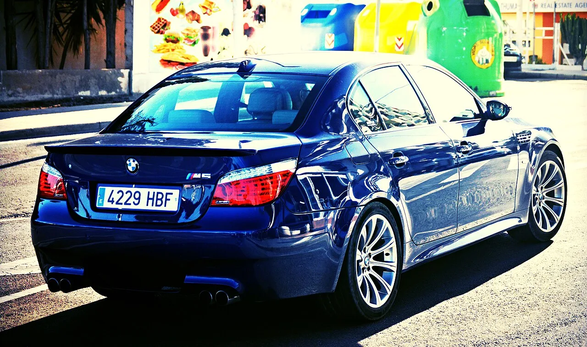
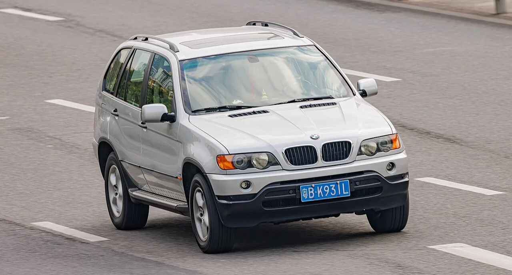
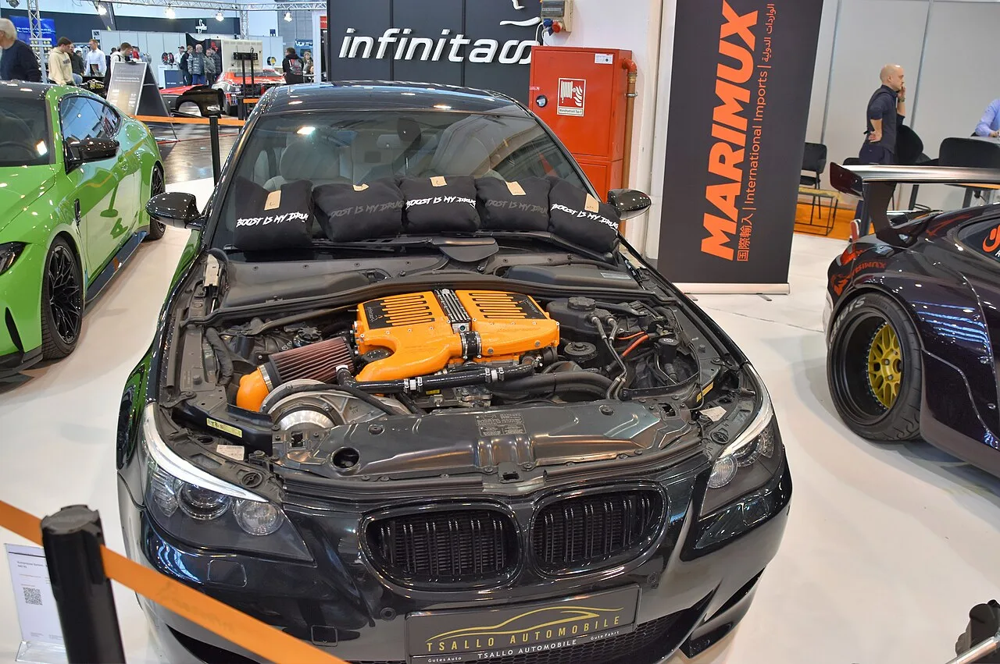

▲ BMW 1세대 X5(E53). 이 차를 완전히 분해해 V10과 6단 수동을 넣었다
BMW와 패션 브랜드 키스(Kith)가 2000년식 1세대 X5(E53)를 다시 만들었습니다.
단순 복원이 아닙니다. M5에서 꺼낸 5.0리터 V10을 얹고 6단 수동변속기를 물렸습니다.
BMW가 실제로 만든 적 없는 조합입니다. X5에 V10을 넣은 적도, 수동을 물린 적도 없습니다.
1. 로티세리 복원이라는 방식
로티세리(rotisserie) 복원은 차체를 회전 지그에 올려놓고 모든 부품을 떼어낸 뒤 처음부터 다시 조립하는 방식입니다.
통상 복원과 다른 점은 차체 하부까지 완전히 접근한다는 것입니다. 지그를 돌려 차를 뒤집을 수 있으니 바닥면 부식과 도장까지 새로 처리합니다.
비용과 시간이 크게 듭니다. 이 프로젝트에 1년이 걸린 이유가 여기 있습니다.
베이스는 2000년식 E53 X5입니다. BMW의 첫 SUV이자, SAV(Sports Activity Vehicle)라는 용어를 만들어낸 모델입니다. 지금 SUV 시장의 형태를 상당 부분 정의한 차입니다.
2. 왜 V10 + 수동인가
이식된 엔진은 5.0리터 V10입니다. E60 M5에 들어갔던 자연흡기 유닛으로, 출력은 500마력, 383lb-ft입니다.
이 엔진이 특별한 이유가 있습니다. BMW가 양산차에 V10을 넣은 것은 이 시기가 사실상 유일합니다. F1 기술을 도로차에 옮긴다는 명분으로 만들어졌고, 8,000rpm을 넘게 도는 자연흡기였습니다.
여기에 6단 수동을 물린 것이 이 프로젝트의 핵심입니다.
역사적으로 보면 E60 M5에도 미국 사양에 한해 6단 수동이 있었습니다. 유럽은 SMG 자동화 수동이 기본이었습니다. 즉 V10과 수동의 조합 자체는 실재했지만, X5 차체에 들어간 적은 없습니다.
사륜구동을 유지했다는 점도 눈여겨볼 만합니다. E53 X5의 성격을 남기면서 파워트레인만 바꾼 구성입니다.

▲ BMW M5(E60). 이 차의 5.0리터 V10이 X5로 옮겨졌다
3. 디테일에서 읽히는 것
외장은 티타늄 실버 메탈릭입니다. E53 시절 BMW의 대표 색 중 하나로, 당시 분위기를 그대로 살린 선택입니다.
기능 부품도 손봤습니다. 커스텀 배기와 재구성된 서스펜션, 그리고 M 스포츠 브레이크가 들어갔습니다. 캘리퍼는 키스 브랜드의 블루로 칠했습니다.
실내는 블랙 레더 기반에 키스 엠보싱이 시트·센터콘솔·시프트부츠·도어 패널에 들어갑니다. 속도계에도 키스 로고가 박혔습니다.
시프트부츠에 엠보싱이 있다는 것은 수동변속기를 이 차의 정체성으로 삼았다는 뜻입니다. 자동이었다면 그 자리가 없습니다.
4. 함께 공개된 2027년형 X5
이 프로젝트와 함께 현행 X5 기반 협업 모델도 공개됐습니다.
| 항목 | E53 레스토모드 | 2027년형 X5 |
|---|---|---|
| 엔진 | 5.0L V10 자연흡기 | 3.0L 터보 직렬 6기통 |
| 출력 | 500마력 / 383lb-ft | 394마력 / 428lb-ft |
| 변속기 | 6단 수동 | 자동 |
| 외장 | 티타늄 실버 메탈릭 | 프로즌 티타늄 실버 |
| 휠 | — | 23인치 |
현행 모델은 X5 40 xDrive 기반으로 394마력, 428lb-ft입니다. 프로즌 티타늄 실버 외장에 23인치 휠, 카본 파이버 스포츠 시트가 들어갑니다.
토크는 현행이 더 높습니다. 터보 엔진이니 당연한 결과입니다. 그런데도 화제가 되는 쪽은 26년 된 차입니다.
이유는 단순합니다. 지금은 살 수 없는 조합이기 때문입니다. 자연흡기 V10도, SUV의 6단 수동도 현재 신차 시장에 없습니다.

▲ E53은 BMW의 첫 SUV이자 SAV라는 용어를 만들어낸 모델이다
5. 이런 협업이 늘어나는 이유
제조사가 자사 구형 모델을 다시 만드는 프로젝트가 최근 늘고 있습니다.
배경에는 신차에서 표현할 수 없는 것이 쌓였다는 사정이 있습니다. 배출가스와 안전 규제, 원가 구조 때문에 자연흡기 대배기량이나 수동변속기를 신차에 넣기가 어려워졌습니다.
구형 차를 개조하면 그 제약에서 자유롭습니다. 이미 등록된 차량이라 신차 인증을 다시 받을 필요가 없습니다.
동시에 브랜드 유산을 상기시키는 효과도 큽니다. BMW가 V10을 만들던 시기를 다시 꺼내는 것 자체가 메시지입니다.
BMW는 최근 소량 한정판을 온라인으로 푸는 방식도 반복해왔습니다. 이번 협업도 같은 결의 접근입니다.

▲ BMW가 양산차에 V10을 넣은 것은 이 시기가 사실상 유일하다
다만 생산 대수와 가격은 공개되지 않았습니다. 한 대만 만든 쇼카인지, 소량 판매되는지도 알려지지 않았습니다.
6. 정리
BMW와 키스가 2000년식 E53 X5를 로티세리 복원한 뒤 M5의 5.0리터 V10과 6단 수동을 이식했습니다. 500마력, 383lb-ft이고 사륜구동은 유지했습니다. 제작에 1년이 걸렸습니다.
BMW가 실제로 만든 적 없는 조합입니다. X5에 V10이 들어간 적도, 수동이 물린 적도 없습니다.
함께 공개된 2027년형 X5 40 xDrive 협업 모델은 3.0 직렬 6기통 394마력입니다. 토크는 현행이 높은데 화제는 26년 된 차가 가져갔습니다.
생산 대수와 가격은 공개되지 않았습니다.